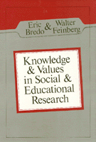

Key essays introduce the rational assumptions underlying the debate over educational and social science methodology
Key essays introduce the rational assumptions underlying the debate over educational and social science methodology


 Key essays introduce the rational assumptions underlying the debate over educational and social science methodology
Key essays introduce the rational assumptions underlying the debate over educational and social science methodology

|  |
Knowledge and Values in Social and Educational Researchedited by Eric Bredo and Walter Feinbergpaper EAN: 978-0-87722-245-3 (ISBN: 0-87722-245-2) |
"To say this book is important risks understatement. It very nearly represents the state of the art in research methodology for the human sciences...A watershed event in the literature of education."
—James Palermo, Educational Theory
Key essays introduce the rational assumptions underlying the principal competing traditions in the debate over educational and social science methodology.
Education
Philosophy and Ethics
© 2015 Temple University. All Rights Reserved. This page: http://www.temple.edu/tempress/titles/247_reg.html.